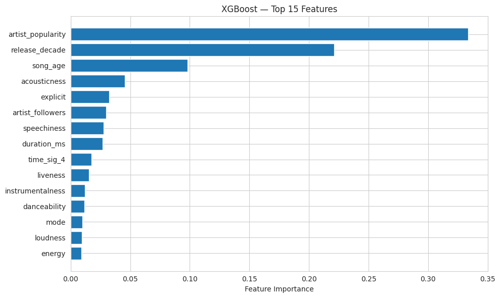
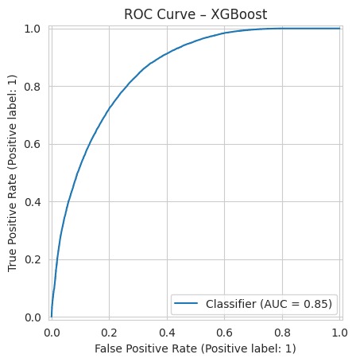

About Me
I grew up in Fresno but I've been in San Diego my for most of my life and never wanted to leave. The weather is perfect, so many nice beaches, and theres always something to do. So thats why I decided to also purdure higher education here. I'm attending the University of San Diego.
I'm working on getting my bachelors degree in Computer Science. I was worried at first because I had no coding experience going in to the CS program. But it wasn't that bad I had a lot of fun most of the time and it was very rewarding. I took an AI/machine learning course and it sparked my I intrest in the topic. Specifically the computer vision aspect of it. I thought it was funny how my computer knew I was holding up a pencil but it made me thing of all the possibilities.
One of my favorite things to do is walk down Pacific Beach and people watch, you see so many interesting characters.
View My ProjectsProjects

Top features influencing song popularity

XGBoost ROC Curve (AUC = 0.85)
Spotify Song Popularity Predictor
Built a machine learning model to predict whether a song will become popular on Spotify using audio features and metadata from over 580,000 tracks.
The dataset included features such as danceability, energy, tempo, loudness, instrumentalness, valence, and release year. Songs were labeled as popular if their Spotify popularity score was 60 or higher.
- Analyzed a dataset of 580,000+ songs from Spotify
- Engineered features such as release decade and encoded categorical metadata
- Trained models including Logistic Regression, Random Forest, and XGBoost
- Converted popularity score into a binary classification problem
- Evaluated models using F1-score and ROC-AUC with Stratified K-Fold Cross Validation
The best performing model achieved an F1-score of 0.81 when predicting song popularity.
Model Performance
| Model | F1 Score | ROC-AUC |
|---|---|---|
| Logistic Regression | 0.68 | 0.73 |
| Random Forest | 0.76 | 0.81 |
| XGBoost | 0.81 | 0.86 |
Actor Graph Path Finder BFS & Dijkstra's
Developed a graph-based system to compute the shortest connection path between actors based on shared movie appearances. The system uses both unweighted (BFS) and weighted (Dijkstra's) shortest path algorithms.
- Constructed a graph with over thousands of actors and movies using adjacency lists
- Implemented Breadth-First Search for unweighted shortest paths
- Implemented Dijkstra’s algorithm using a priority queue for weighted paths
- Designed a custom weighting function prioritizing more recent movie connections
- Built an end to end pipeline to load data, compute paths, and output formatted results
This project strengthened my understanding of graph algorithms, data structures, and real world system design in Java.

add

add
Contact Me
jvarimiller9@gmail.com